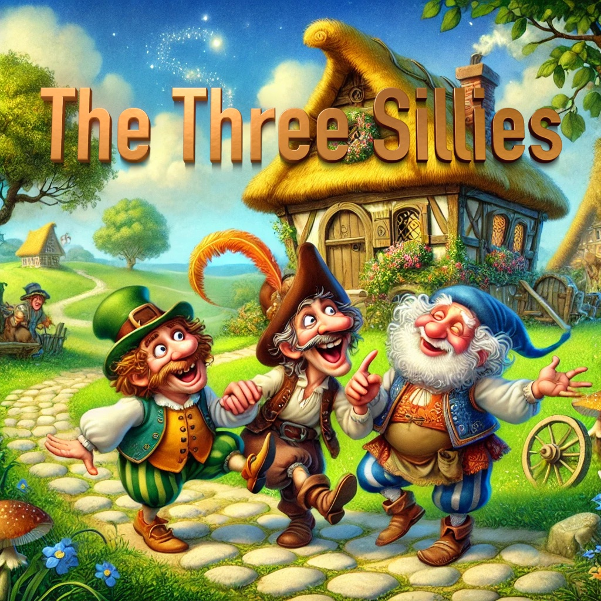

The Three Sillies
Example 2
The Project Gutenberg eBook of English Fairy Tales compiled by Joseph Jacobs, a copyright-free collection of classic tales.

Once upon a time there was a farmer and his wife who had one daughter, and she was courted by a gentleman. Every evening he used to come and see her, and stop to supper at the farmhouse, and the daughter used to be sent down into the cellar to draw the beer for supper. So one evening she had gone down to draw the beer, and she happened to look up at the ceiling while she was drawing, and she saw a mallet stuck in one of the beams. It must have been there a long, long time, but somehow or other she had never noticed it before, and she began a-thinking. And she thought it was very dangerous to have that mallet there, for she said to herself: "Suppose him and me was to be married, and we was to have a son, and he was to grow up to be a man, and come down into the cellar to draw the beer, like as I'm doing now, and the mallet was to fall on his head and kill him, what a dreadful thing it would be!" And she put down the candle and the jug, and sat herself down and began a-crying.
Well, they began to wonder upstairs how it was that she was so long drawing the beer, and her mother went down to see after her, and she found her sitting on the settle crying, and the beer running over the floor. "Why, whatever is the matter?" said her mother. "Oh, mother!" says she, "look at that horrid mallet! Suppose we was to be married, and was to have a son, and he was to grow up, and was to come down to the cellar to draw the beer, and the mallet was to fall on his head and kill him, what a dreadful thing it would be!" "Dear, dear! what a dreadful thing it would be!" said the mother, and she sat her down aside of the daughter and started a-crying too. Then after a bit the father began to wonder that they didn't come back, and he went down into the cellar to look after them himself, and there they two sat a-crying, and the beer running all over the floor. "Whatever is the matter?" says he. "Why," says the mother, "look at that horrid mallet. Just suppose, if our daughter and her sweetheart was to be married, and was to have a son, and he was to grow up, and was to come down into the cellar to draw the beer, and the mallet was to fall on his head and kill him, what a dreadful thing it would be!" "Dear, dear, dear! so it would!" said the father, and he sat himself down aside of the other two, and started a-crying.
Now the gentleman got tired of stopping up in the kitchen by himself, and at last he went down into the cellar too, to see what they were after; and there they three sat a-crying side by side, and the beer running all over the floor. And he ran straight and turned the tap. Then he said: "Whatever are you three doing, sitting there crying, and letting the beer run all over the floor?"
"Oh!" says the father, "look at that horrid mallet! Suppose you and our daughter was to be married, and was to have a son, and he was to grow up, and was to come down into the cellar to draw the beer, and the mallet was to fall on his head and kill him!" And then they all started a-crying worse than before. But the gentleman burst out a-laughing, and reached up and pulled out the mallet, and then he said: "I've travelled many miles, and I never met three such big sillies as you three before; and now I shall start out on my travels again, and when I can find three bigger sillies than you three, then I'll come back and marry your daughter." So he wished them good-bye, and started off on his travels, and left them all crying because the girl had lost her sweetheart.
Well, he set out, and he travelled a long way, and at last he came to a woman's cottage that had some grass growing on the roof. And the woman was trying to get her cow to go up a ladder to the grass, and the poor thing durst not go. So the gentleman asked the woman what she was doing. "Why, lookye," she said, "look at all that beautiful grass. I'm going to get the cow on to the roof to eat it. She'll be quite safe, for I shall tie a string round her neck, and pass it down the chimney, and tie it to my wrist as I go about the house, so she can't fall off without my knowing it." "Oh, you poor silly!" said the gentleman, "you should cut the grass and throw it down to the cow!" But the woman thought it was easier to get the cow up the ladder than to get the grass down, so she pushed her and coaxed her and got her up, and tied a string round her neck, and passed it down the chimney, and fastened it to her own wrist. And the gentleman went on his way, but he hadn't gone far when the cow tumbled off the roof, and hung by the string tied round her neck, and it strangled her. And the weight of the cow tied to her wrist pulled the woman up the chimney, and she stuck fast half-way and was smothered in the soot.
Well, that was one big silly.
And the gentleman went on and on, and he went to an inn to stop the night, and they were so full at the inn that they had to put him in a double-bedded room, and another traveller was to sleep in the other bed. The other man was a very pleasant fellow, and they got very friendly together; but in the morning, when they were both getting up, the gentleman was surprised to see the other hang his trousers on the knobs of the chest of drawers and run across the room and try to jump into them, and he tried over and over again, and couldn't manage it; and the gentleman wondered whatever he was doing it for. At last he stopped and wiped his face with his handkerchief. "Oh dear," he says, "I do think trousers are the most awkwardest kind of clothes that ever were. I can't think who could have invented such things. It takes me the best part of an hour to get into mine every morning, and I get so hot! How do you manage yours?" So the gentleman burst out a-laughing, and showed him how to put them on; and he was very much obliged to him, and said he never should have thought of doing it that way.
So that was another big silly.
Then the gentleman went on his travels again; and he came to a village, and outside the village there was a pond, and round the pond was a crowd of people. And they had got rakes, and brooms, and pitchforks, reaching into the pond; and the gentleman asked what was the matter. "Why," they say, "matter enough! Moon's tumbled into the pond, and we can't rake her out anyhow!" So the gentleman burst out a-laughing, and told them to look up into the sky, and that it was only the shadow in the water. But they wouldn't listen to him, and abused him shamefully, and he got away as quick as he could.
So there was a whole lot of sillies bigger than them three sillies at home. So the gentleman turned back home again and married the farmer's daughter, and if they didn't live happy for ever after, that's nothing to do with you or me.
THE ROSE-TREE
There was once upon a time a good man who had two children: a girl by a first wife, and a boy by the second. The girl was as white as milk, and her lips were like cherries. Her hair was like golden silk, and it hung to the ground. Her brother loved her dearly, but her wicked stepmother hated her. "Child," said the stepmother one day, "go to the grocer's shop and buy me a pound of candles." She gave her the money; and the little girl went, bought the candles, and started on her return. There was a stile to cross. She put down the candles whilst she got over the stile. Up came a dog and ran off with the candles.
She went back to the grocer's, and she got a second bunch. She came to the stile, set down the candles, and proceeded to climb over. Up came the dog and ran off with the candles.
She went again to the grocer's, and she got a third bunch; and just the same happened. Then she came to her stepmother crying, for she had spent all the money and had lost three bunches of candles.
The stepmother was angry, but she pretended not to mind the loss. She said to the child: "Come, lay your head on my lap that I may comb your hair." So the little one laid her head in the woman's lap, who proceeded to comb the yellow silken hair. And when she combed the hair fell over her knees, and rolled right down to the ground.
Then the stepmother hated her more for the beauty of her hair; so she said to her, "I cannot part your hair on my knee, fetch a billet of wood." So she fetched it. Then said the stepmother, "I cannot part your hair with a comb, fetch me an axe." So she fetched it.
"Now," said the wicked woman, "lay your head down on the billet whilst I part your hair."
Well! she laid down her little golden head without fear; and whist! down came the axe, and it was off. So the mother wiped the axe and laughed.
Then she took the heart and liver of the little girl, and she stewed them and brought them into the house for supper. The husband tasted them and shook his head. He said they tasted very strangely. She gave some to the little boy, but he would not eat. She tried to force him, but he refused, and ran out into the garden, and took up his little sister, and put her in a box, and buried the box under a rose-tree; and every day he went to the tree and wept, till his tears ran down on the box.
One day the rose-tree flowered. It was spring, and there among the flowers was a white bird; and it sang, and sang, and sang like an angel out of heaven. Away it flew, and it went to a cobbler's shop, and perched itself on a tree hard by; and thus it sang,
"My wicked mother slew me, My dear father ate me, My little brother whom I love Sits below, and I sing above Stick, stock, stone dead."
"Sing again that beautiful song," asked the shoemaker. "If you will first give me those little red shoes you are making." The cobbler gave the shoes, and the bird sang the song; then flew to a tree in front of a watchmaker's, and sang:
"My wicked mother slew me, My dear father ate me, My little brother whom I love Sits below, and I sing above Stick, stock, stone dead."
"Oh, the beautiful song! sing it again, sweet bird," asked the watchmaker. "If you will give me first that gold watch and chain in your hand." The jeweller gave the watch and chain. The bird took it in one foot, the shoes in the other, and, after having repeated the song, flew away to where three millers were picking a millstone. The bird perched on a tree and sang:
"My wicked mother slew me, My dear father ate me, My little brother whom I love Sits below, and I sing above Stick!"
Then one of the men put down his tool and looked up from his work,
"Stock!"
Then the second miller's man laid aside his tool and looked up,
"Stone!"
Then the third miller's man laid down his tool and looked up,
"Dead!"
Then all three cried out with one voice: "Oh, what a beautiful song! Sing it, sweet bird, again." "If you will put the millstone round my neck," said the bird. The men did what the bird wanted and away to the tree it flew with the millstone round its neck, the red shoes in one foot, and the gold watch and chain in the other. It sang the song and then flew home. It rattled the millstone against the eaves of the house, and the stepmother said: "It thunders." Then the little boy ran out to see the thunder, and down dropped the red shoes at his feet. It rattled the millstone against the eaves of the house once more, and the stepmother said again: "It thunders." Then the father ran out and down fell the chain about his neck.
In ran father and son, laughing and saying, "See, what fine things the thunder has brought us!" Then the bird rattled the millstone against the eaves of the house a third time; and the stepmother said: "It thunders again, perhaps the thunder has brought something for me," and she ran out; but the moment she stepped outside the door, down fell the millstone on her head; and so she died.